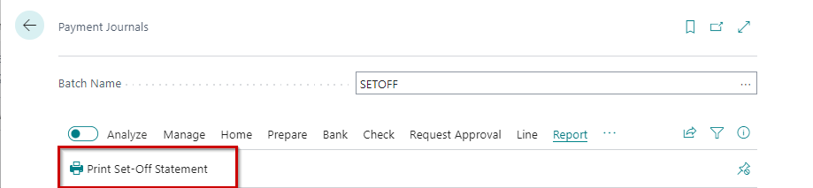

Set-off statement printout
Overview
System standard functionality ensures Net Customer/Vendor balances function in Payment Journal. As a result 2 journal lines are created:
Vendor unpaid invoices amount
Customer unpaid invoices amount
System standard function does not involve any printout possibilities for the transaction.
The customization adds a button to Payment Journal Print Set-off Statement under section Reports. Printout is used before posting the Payment Journal Lines. Therefore the printout is not available after the lines are posted.
It is advised to use separate Payment Journal batch for processing of such transactions (Copy VAT Posting Setup should be disabled for this batch Copy to Posted Journals can be enabled, in case to prepare the printout by copying posted journal lines).

Pre-requisites
Before creating set-off transaction, it is required to ensure:
Vendor card and Customer card is linked via Contacts (Business Relations)
Both Vendor and Customer have non paid invoices
Set-off date should be with a date that is after the latest vendor/customer invoice.
Payment Journal Select Specific Batch. In Ribbon press Net Customer/Vendor Balances
The following information should be completed
Posting Date [1] - date for the set-off transaction
Document No. [2]- entered manually, if no numbering series assigned to Payment Journal Batch.
Description [3]- system generated description that contains the following parameters:
%1 - document number
%2 - document date
Order of suggestion [4]
Finance Charge Memos First - Finance Charge Memos are suggested first for the sett-off, other document types are taken into consideration afterwards
Invoice First - Invoices are suggested first for the sett-off, other document types are taken into consideration afterwards
By Entry No. - documents are suggested by Entry No.
Vendor No. [5]- set-off can be suggested for definite Vendor; if this filter is blank, then Set-off is suggested for all Vendors and their linked Customers.
After the Payment Journal lines are created, prepare the printout
In report request page
Journal Template Name - filled automatically
Journal Batch Name - filled automatically
Document No. - use Document No. as filter, otherwise leave blank
Posting Date - use Posting Date as filter, otherwise leave blank
Set-off statement printout is prepared in accordance to Language Code that is set in Vendor Card.
Assumptions and limitations
Latvian Localization must be installed Latvian Localization.